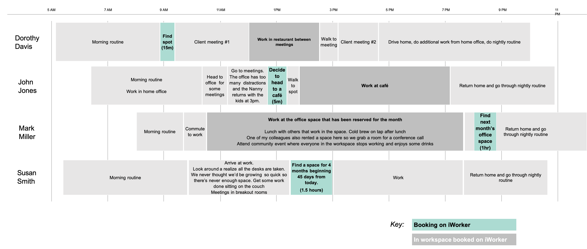

iWorker
As part of the University of Michigan's SI 582: Introduction to Interaction Design course, I created a prototype for an app called iWorker.The objective of the course was to teach methods and skills involved in designing and prototyping interactive systems. Each student pursued their own project during the semester, using the design process to guide their process. Individually, students determined a problem space all the way through to creating a digital prototype.
Project Cycle

Identifying Problem Space
As an analyst at Nielsen I got my first experience with remote and distributed work. After discussing my experience with some of my friends who also had exposure working remote, I realized there was a gap within this segment of the population, more specifically the disparity between their needs and what was available.
But it wasn't just my friends and I that were having this problem. From 2005 to 2018 there was a 140% increase in telecommuters, and does not include those self-employed (i.e., freelancers and gig workers).On top of that, the US had about 4.3 million remote works in 2018, which was about 3.2% of the non-self employed, working population.
What made this an even more compelling problem space was that studies suggested that the trend towards remote worke was set to continue. One study by Odesk, projects that 1 in 3 employed people in the US would be remote works by 2020.
Competitive Analysis
The next step was to examine the competitive landscape. I included WeWork, Breather, Spacious, and Airbnb, and looked at their membership model, locations, space availablity, perks, and community.After conducting this analysis, there was a clear opportunity: provide users a greater range of environments when selecting their work location by partnering with restaurants, cafes, hotels, private landlords, etc. to ensure mutual gains.
Personas
Given the time constraints, I was unable to conduct research that would inform these personas, but used secondary research to fill that gaps. I found this really helpful because they reminded me of what it was that I was trying to accomplish and who I was trying to accomplish it for.

Story Maps
Elaborating and providing additional context to these personas, the story maps lended insight into exactly when a user might be on the platform. There were a number of different use-cases, some users might need a space in five minutes while others might look for something five months out.
The Problem
It has become increasingly difficult for remote workers to find workspaces that meet their needs.

Brainstorming

Proposed Solution
Connect remote workers that seek alternative workspaces with businesses that have available space. Provide information on environment and space culture to ensure user “fit.”